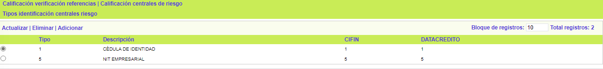
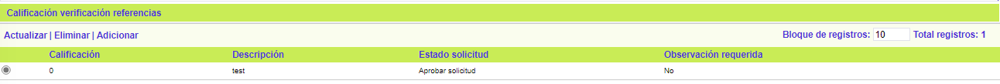
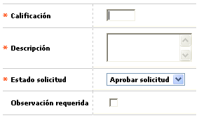
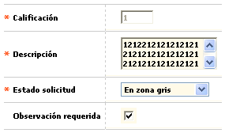
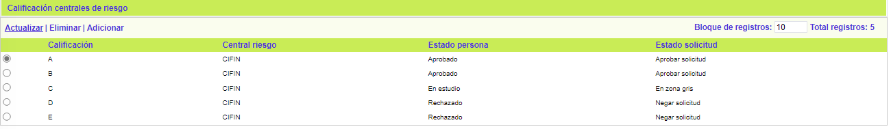
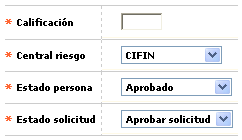
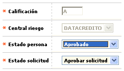

Parámetros de solicitudes - Globo de localización
Localización: Este formulario cuenta con tres bloques de ingreso de registros: Tipos identificación centrales riesgo, Calificación verificación de referencias y Calificación centrales riesgo. Cada uno de ellos tiene las las opciones Actualizar, Eliminar y Adicionar.
Adicionalmente, el formulario cuenta con un botón en la parte superior para volver al formulario principal.
Tipos identificación centrales riesgo: Conjunto de campos en los que se relaciona la equivalencia de los códigos internos de tipos de documentos de identificación usados por Bankbú® versus las Centrales de riesgo Cifin y Datacrédito.

Adicionar: Si el usuario invoca la opción Adicionar se despliega un formulario con los siguientes campos:

Tipo |
Campo obligatorio tipo Combo con los tipos de identificación existentes y acordes con lo parametrizado en la opción Tipos de identificación. |
CIFIN |
El campo obligatorio CIFIN acepta cualquier dato numérico de máximo dos (2) dígitos sin decimales. No puede ser nulo. |
DATACRÉDITO |
El campo obligatorio DATACRÉDITO acepta cualquier dato numérico de máximo dos (2) dígitos sin decimales. No puede ser nulo. |
Actualizar: Si el usuario invoca la opción Actualizar se despliega un nuevo formulario en el cual los únicos campos modificables son: Nombre, y Prototipo.

Calificación verificación de referencias: Conjunto de campos en los que se define la implicación de la calidad de las referencias obtenidas sobre el solicitante.

Adicionar: Si el usuario invoca la opción Adicionar se despliega un formulario con los siguientes campos:

Calificación |
Este campo obligatorio acepta cualquier dato alfanumérico de máximo dos (2) caracteres, en mayúsculas por defecto. No puede ser nulo. |
Descripción |
Campo obligatorio alfanumérico de máximo sesenta (60) caracteres, permite mayúsculas y minúsculas. No puede ser nulo. En él se debe ingresar una descripción breve de tipo de Calificación. |
Estado solicitud |
Campo obligatorio tipo Combo con las opciones (En zona gris, Negar solicitud o Aprobar solicitud). No puede ser nulo. Determina en qué estado el sistema dejará la solicitud en caso de tener esta calificación. |
Observación requerida |
El campo permite ser marcado o desmarcado, determinando si son necesarias observaciones adicionales para la Calificación. |
Actualizar: Si el usuario invoca la opción Actualizar se despliega un nuevo formulario en el cual los únicos campos modificables son: Descripción, Estado solicitud, y Observación requerida.

Calificación centrales riesgo: Conjunto de campos en los que deben sincronizarse la codificación de la respuesta emanada por las centrales de riesgo y su significado, para con base en ello determinar el estado de la solicitud y si puede o no pasar a la siguiente etapa

Adicionar: Si el usuario invoca la opción Adicionar se despliega un formulario con los siguientes campos:

Calificación |
Campo obligatorio que acepta cualquier dato alfanumérico de máximo dos (2) caracteres, no puede ser nulo. Contiene mayúsculas por defecto |
Central riesgo |
El campo Central Riesgo es obligatorio, y contiene un combo con las opciones (CIFIN ó DATACRÉDITO) |
Estado persona |
Este campo obligatorio contiene un combo con las opciones (Nit no registrado, Rechazado, Sin información, En estudio o Aprobado) |
Estado solicitud |
El campo contiene un combo con las opciones (En zona gris, Negar solicitud o Aprobar solicitud). No puede ser nulo. |
Actualizar: Si el usuario invoca la opción Actualizar se despliega un nuevo formulario en el cual los únicos campos modificables son: Estado persona, y Estado solicitud.

Formulario principal |Filtros |Funcionarios | Calificación| Negación | Variables cupo